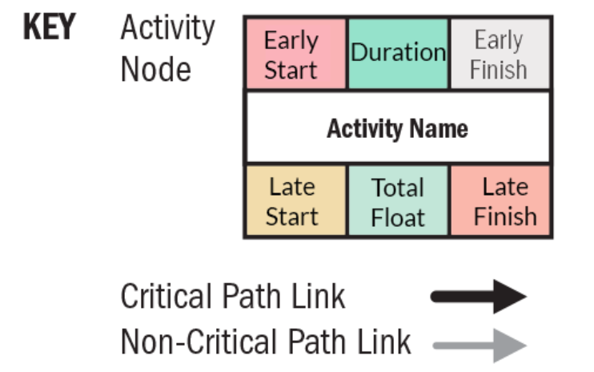
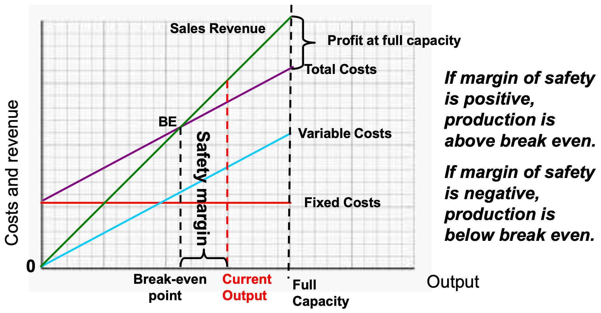

EPMF Crash Course 工程项目管理与财务速成笔记
本笔记是本人电子科技大学格院大三《工程项目管理与财务》课程的期末考试复习笔记.
本文 All Right Reserved 保留所有权利, 禁止商用和任何形式的转载!
1 DFM (Design for Manufacturing)
1.1 Introduction & Design for Sustainability
- DFM 最有效的阶段是 初始设计阶段 (initial design stage)，因为此时变更代价最低且影响最大
- 产品总制造成本中有 70% 到 80% 是在设计阶段就已经决定了
- DFM 的原则 (principles):
- Simplicity: 如果插头不能实现正反插就不要设计成对称的
- Standardization: 比如各种USB接口
- Tolerance: 比如电阻的精度, 设计时要考虑到制造误差
- Material Selection: 要考虑材料的强度、耐用性、可加工性等
- Automation: 哪些工序可以自动化?
- Process Integration: 衔接好 product design, manufacturing processes, and quality control.
- DFM 的 错误说法:
- May impose higher manufacturing costs (应该是减少)
- May increase complexity of manufacturing operations (应该是减少)
- Design for Sustainability (DFS) 可持续性
- 三大支柱 (pillars): Economic, Environmental, Social (economic growth, environmental care, and social well-being)
- 可持续设计应 避免 Design for shorter period of usage (设计成短周期产品)
- 4Rs: Reduce, Reuse, Repair, Recycle
1.2 Quality Control & Cost of Quality
- 7-QC Tools 7个质量工具:
Flowchart: 用来记录和规划过程
Flowchart 例子 Check sheet: 用来收集数据, 记录问题发生的频率和类型
Check sheet 例子 Pareto chart: 把问题按发生频率排序, 找出最重要的问题
Pareto chart 例子 - 80/20 Rule 二八定律: 80% 的投诉来自 20% 的客户, 80% 的利润来自 20% 的产品, 80% 的缺陷来自 20% 的工艺问题
Cause-and-effect diagram 因果图: 帮我们识别问题的根本原因 (root causes).
Cause-and-effect diagram 例子 - 也叫 fishbone 鱼骨图, Ishikawa diagram
Control chart: 用来实时检测过程的稳定性和变化.
Control chart 例子 也叫 Shewhart chart
一般会根据历史数据算出三个量:
Average 平均值: \[\boxed{\bar{X} = \frac{1}{N} \sum_{i=1}^{N} x_i}\]
Upper/Lower Control Limit (UCL/LCL) 上/下控制限: \[ \boxed{ \begin{aligned} \hat{\sigma} &= \sqrt{\frac{1}{N-1} \sum_{i=1}^{N} (x_i - \bar{X})^2} \\ \text{UCL} &:= \bar{X} + A\hat{\sigma} \\ \text{LCL} &:= \bar{X} - A\hat{\sigma} \\ \text{Process Width} &:= \text{UCL} - \text{LCL} \end{aligned}} \]
用 \(A\) 来控制严格程度
Instability: 落在 UCL 和 LCL 之外的点.
Upper/Lower Specification Limit (USL/LSL) 上/下规格限: 由客户或产品标准规定, 比 Process Width 宽. \[\boxed{\text{Design Width} := \text{USL} - \text{LSL}}\]
这是一个 \(3\sigma\) 过程, \(\text{Design Width} > \text{Process Width}\), \(\text{LSL}\) 和 \(\text{USL}\) 也不一定关于 \(\bar{X}\) 对称, \(1, 1.33, 1.67\) 临界值要记住 \(6\sigma\) 过程: \(\bar{X} \pm 6\sigma\) 仍在 Process Width 内, 说明设计接近完美.
- 5 phases (DMAIC model): Define, Measure, Analyze, Improve, Control.
- 5 roles:
- Executive Leadership 高层领导: CEO, 设方向、资源保障、文化推动.
- Champion 主管: 项目推动者.
- Master Black Belts 大师黑带: 全职从事 Six Sigma, 负责培训和指导.
- Black Belts 黑带: 项目执行者.
- Green Belts 绿带: 打工的.
Process Capability Index 过程能力指标 (越大越好): \[\boxed{\begin{aligned} C_p &= \frac{\text{Design Width}}{6\sigma} \\ C_{pk} &= \min\left(\frac{\text{USL} - \bar{X}}{3\sigma}, \frac{\bar{X} - \text{LSL}}{3\sigma}\right) \\ \end{aligned}}\]
Histogram
{#width=50%}
Scatter diagram
Scatter diagram 例子
1.3 Robust Manufacturing Design
- Robust Design (R & D) 鲁棒设计
动机: 不是控制噪声, 而是优化系统设计, 使其对这些“噪声”不敏感, 从而提高质量.
传统观点: 比如造电阻, 只要电阻值落在目标值的容差范围 (\(\Delta_0\)) 内就算好 (\(L = 0\)), 超出就是坏.
传统观点 Taguchi观点: 只有电阻值恰好等于目标值才是好 (\(L = 0\)), 偏离越大, 损失以二次函数形式增加 (Figure 1).
\(k\): Quality Loss Coefficient, \(m\): 目标值.
Figure 1: Taguchi观点, 要记住三种曲线的名字, \(m\) 是设计值不是样本均值 Average Quality Loss: 如果有很多测量值, 则 Loss 的计算取他们的平均: \[\boxed{Q = \frac{1}{N} \sum_{i=1}^{N} k(x_i - m)^2} \tag{1}\]
- 若样本 \(\{y_i\}_{i=1}^{N}\) 的均值和方差为 \(\bar{y}, s^2\), 当 \(N\) 很大时, Equation 1 可以写成: \[\boxed{Q = k [(\bar{y} - m)^2 + s^2]}\]
- P Diagram
- 动机: 有很多因素 (called parameter or factor) 会影响产品质量:
- Signal factors: 电压、电流、电阻、温度等.
- Control factors: 材料柏松比、制造工艺、测试方法等.
- Noise factors: 分为:
- External 外界噪声: 温度、湿度、灰尘、振动.
- Unit-to-unit variation: 所用的电阻的误差.
- Deterioration 老化: 零件老化.
- 动机: 有很多因素 (called parameter or factor) 会影响产品质量:
1.4 6-Sigma & Process Capability
见 Section 1.2.
2 Project Management 项目管理
- Project 项目
- 有开始和结束时间 (Temporary)
- 独特 (Unique)，即使包含重复任务
- 可交付物可以是：
- 有形 (Tangible)：软件、设备
- 无形 (Intangible)：知识、流程、服务能力等
- WBS: Work Breakdown Structure
- S 不是 Statement!
- BCR (Benefit-Cost Ratio) 效益成本比: \[\boxed{\text{BCR} = \frac{\text{Total Benefits}}{\text{Total Costs}}}\]
- 分子分母要转换为 PV.
- 当 \(\boxed{\text{BCR} \le 1}\) 时, 项目不可行.
- Standard 标准 和 Regulation 法规 区别: Regulations are mandatory and standards are optional
2.1 Project Schedule Management
- CPM 关键路径法 (Watch this video)
- Forward Pass: 沿着箭头走, 取最大
- Backward Pass: 逆着箭头走, 取最小
- Total Float (Slack): \[\boxed{\text{Slack} := \text{LS} - \text{ES} = \text{LF} - \text{EF}}\]
- Critical Path: 路径上每个节点的 \(\boxed{\text{Slack} = 0}\).

2.2 Cost Management 成本管理
| 指标 | 数值 |
|---|---|
| PV = 400 | 本来应该做 400 元的活 |
| EV = 300 | 实际只完成了 300 元的活 (落后于进度) |
| AC = 500 | 却花了 500 元 (成本超支) |
2.3 Communication Management 沟通管理
- Communication Model 的基本组成: Sender, Receiver, Message
- 没有: Feedback, Noise, Medium, Interference
- Medium: 传递信息的媒介, 如邮件、电话、会议等
- Communication Methods 沟通方式:
- Push: 一方向多方传送, 如邮件、报告
- Pull: 自主访问信息, 如网站、数据库 (大数据量的)
- Interactive: 双向交流, 如会议、电话
- Communication Channels 沟通渠道数量 (见 Figure 2): \[\boxed{\text{\#Channels} = \frac{n(n-1)}{2}}\], 其中 \(n\) 是沟通的参与者数量
- Conflict Management 冲突管理:
- Avoiding 回避: 不解决问题, 但避免冲突
- Accommodating 迁就: 让步
- Compromising 妥协: 双方各让一步
- Competing 竞争: 强硬立场, 争取胜利
- Collaborating 合作: 双方共同解决问题, 达成共识
3 计算题
Cash Flow 现金流:
定义: 你账本上记录的 Cost 成本 (cash-out), Price 价格 (cash-in), Profit 利润的流动.
动机: 为什么要强调 Cash「现金」? 比如你是卖手机的, 你给客户发货了 \(1000\) 万元的产品, 客户说：“我3个月后再付款”. 这时你账本上有 \(1000\) 万元的收入, 但实际上你并没有收到钱! 这不是现金流! 如果处理不当, 可能会出现 “账面上赚钱，公司却破产”.
- Payment Term 帐期: “3个月”. 包括商家发货 (shipments) 三个月后才收钱 和 客户收到货后三个月才付款 (payment).
Time Value of Money 时间价值
动机: 一般来说, “今天的 100 元” 比 “未来的 100 元” 更值钱, 因为:
- 国家印钱、通货膨胀、经济增长引起的消费增长
- 投资机会成本 (Opportunity Cost): 如果你把今天的 100 元冻结, 你就失去了投资它的机会 (尽管投资也可能亏损), 机会也是有成本的.
Discounting 折现: 把未来钱的价值折算成今天的价值 (Present Value (PV) 现值).
Discounted Cash Flow (DCF): 折现现金流
Total Cost of Ownership (TCO): 从买到用完这件东西为止，总共要花的钱的折现.
- Projected Costs 相同的概念, 但不需要折现.
NPV 净现值: 把未来的每年收益贴现到今天的价值，然后减去初始投资
Projected Payback Time: 预测的回本时间, 不需要折现计算
4 Engineering Economics 工程经济学
4.1 Introduction
- Evaluating alternatives 分析备选方案:
- 初始成本 Initial cost
- 利率 Interest rate（或期望回报）
- 使用寿命 Anticipated life
- 年运营成本/收益
- 设备寿命结束时的残值 Resale or salvage value.
- Statutory Company Reporting 公司法定报告: 每年必须向政府申报财务状况, 包含:
资产负债表 (Balance Sheet): 显示公司“某一时点”的经济状况
- Assets 资产: 现在有多少现金, 设备, 库存等.
- Liabilities 负债: 欠的钱
- Owners’ Equity 所有者权益: 净资产, 就是上面两个相减.
损益表 (Profit & Loss):
项目 说明 Sales 营业收入 Cost of Sales 成本（含人工、制造成本） Gross Profit 毛利润 = 销售 - 成本 Other Expenses 其他开销 EBITDA1 税息折旧摊销前利润 ITDA 利息、税、折旧、摊销 Net Income 净利润 附注 Notes
董事报告 Director’s Report
1 Earning 利润, Interest 利息开支, Taxes 税收, Depreciation 设备折旧, Amortization 无形资产摊销.
4.2 Break-even Analysis

4.3 Outsourcing 外包
- 好处:
- 降低成本
- 专注核心业务
- 建立合作关系
- 坏处:
- Out of control 失去控制
- Confidentiality and security 泄密和安全
- Provider may not understand business environment 沟通问题
4.4 CapEx, OpEx, and Total Cost of Ownership (TCO)
- CapEx 资本性支出: 用于购买长寿命资产 (\(>1\)年)
- 例子: 购买设备、建筑物、土地等.
- 不会一次性计入利润表 (Profit and Loss Statement, P&L), 而是分摊到多个会计期间.
- OpEx 运营性支出: 用于日常运营的支出
- 例子: 电费、水费、人工费、维修费等.
- 属于当期费用, 会直接计入利润表.
- TCO 见 Section 3.
5 What is a Company?
- 公司的类型:
- Sole Trader 个体户: 你开了一家炸鸡店, 赚了钱就是自己的. 可以雇人, 但要对债务负责. 顾客起诉食物中毒, 你就要用自己的积蓄赔 (风险大).
- Limited company 有限责任公司: 赚了钱是公司的而不是自己的, 用公司里的钱赔, 个人不承担责任 (所以叫 Limited).
- Limited by Shares 股份有限公司:
- Limited by Guarantee 担保有限公司: 慈善机构.
- Public Limited Company (PLC) 上市公司:
- Company Valuation 公司估值